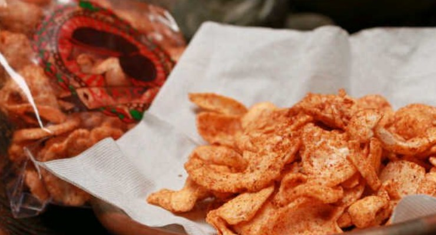

Keripik Pedas

Makanan pedas memang salah satu kuliner paling dicari dan semakin ngetren.
Tidak heran jika banyak keripik pedas di Bandung yang sangat hits di kalangan anak muda.
Awalnya, keripik singkong boleh jadi hanya merupakan makanan kampung yang keberadaannya tidak begitu diperhatikan.
Namun, kehadiran keripik singkong pedas Maicih benar-benar menjadi momen naiknya “derajat” keripik singkong.
Dari sekian banyak produk keripik pedas, ada beberapa keripik pedas paling hits di Bandung yang kerap menjadi buruan anak muda.
Dibawah ini Keripik Pedas Paling Hits di Bandung.
1. Maicih

Sejak kemunculan keripik pedas Maicih, tiba-tiba Bandung diramaikan dengan lautan keripik pedas. Tampak benar-benar ingin menaikan pamor keripik singkong, Maicih memiliki akun khusus di media sosial sehingga pencinta keripik ini bisa mengetahui di mana mereka sedang berjualan. Maklum saja, keripik Maicih dijual secara nomaden. Namun, distributor Maicih kini sudah semakin banyak sehingga tidak sulit lagi mencarinya. Untuk Harga sendiri keripik maicih mematok sesuai dengan tingkat kepedasannya, dengan kisaran harga Rp 10.000 - Rp 20.000.
2. Karuhun

Keripik pedas Karuhun merupakan salah satu keripik pedas yang memiliki banyak peminat. Konon, keripik ini memiliki aroma daun jeruk yang lebih kuat sehingga menambah kenikmatan rasanya. Keripik ini memiliki slogan ‘Resep Jadul Rasa Gaul’ sehingga begitu menarik perhatian pencinta keripik pedas. Tepat rasanya jika Karuhun disebut keripik pedas paling hits di Bandung. Harga keripik karuhun sendiri berkisar Rp ± 12.000.
2. Kribo

Satu lagi keripik pedas yang terkenal di Bandung adalah Kribo. Seperti keripik pedas lainnya, Kribo merupakan buah karya anak muda bernama Agusti Salman Farizi yang sebenarnya sudah memulai usaha keripik sejak 2008. Namun, Kribo baru diluncurkan pada 2011 setelah booming keripik pedas di Bandung. Kribo sendiri merupakan kependekan dari Keripik Bojes. Meskipun termasuk kategori follower, Kribo memiliki level pedas yang siap membuat mulut terbakar. Harga keripik kribo tidak berbeda jauh dengan keripik pedas lainnya, berkisar Rp ± 12.000.
Lokasi penjual keripik pedas di kota Bandung.